VIII. Các loại Module/Loại Menu
1. Văn bản
Module hiển thị danh sách văn bản
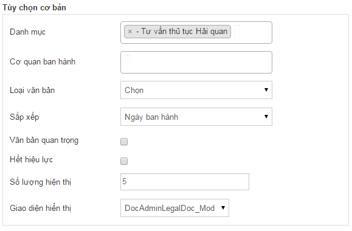
Gồm có các tùy chọn cơ bản:
-
Danh mục: Lọc văn bản theo một hoặc nhiều danh mục được chọn
-
Cơ quan ban hành: Lọc văn bản theo một hoặc nhiều cơ quan ban hành được chọn
-
Loại văn bản: Lọc văn bản theo loại văn bản được chọn. Nếu không chọn thì sẽ lấy theo tất cả
-
Sắp xếp: sắp xếp văn bản theo Ngày ban hành hoặc ngày cập nhật
-
Văn bản quan trọng: Khi check thì chỉ lấy những văn bản quan trọng
-
Hết hiệu lực: Khi check thì chỉ lấy những văn bản hết hiệu lực
-
Số lượng hiển thị: Số văn bản hiển thị trên một trang
-
Giao diện thay thế: để mặc định
2. Danh sách bài viết
Module hiển thị danh sách các bài viết
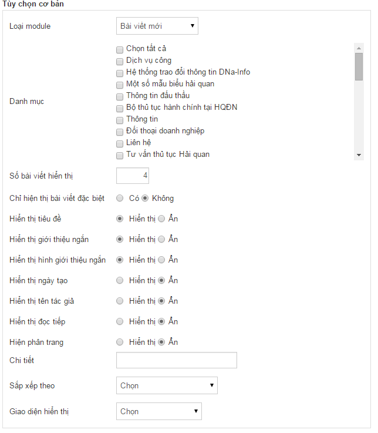
Gồm có các tùy chọn cơ bản:
-
Loại module
-
Danh mục: Lọc theo một hoặc nhiều danh mục bài viết được chọn
-
Số bài viết hiển thị : số bài viết hiển thị trong một trang
-
Hiển thị tiêu đề: Ẩn/ hiện tiêu đề của bài viết
-
Hiển thị giới thiệu ngắn: Ẩn /hiện giới thiệu ngắn của bài viết
-
Hiển thị hình giới thiệu ngắn: Ẩn/hiện hình giới thiệu ngắn của bài viết
-
Hiển thị ngày tạo: Ẩn/hiện ngày tạo bài viết
-
Hiển thị tên tác giả: Ẩn hiện/tên tác giả của bài viết
-
Hiển thị đọc tiếp: Ẩn hiện nút Đọc tiếp của bài viết
-
Hiển thị phân trang: Ẩn/hiện phân trang
-
Sắp xếp theo: Chọn cách sắp xếp thứ tự xuất hiện của bài viết
-
Giao diện hiển thị chọn mặc định
3. Một bài viết
Menu một bài viết hiển thị một bài viết được chọn (Ví dụ như các bài viết giới thiệu hoặc liên hệ)
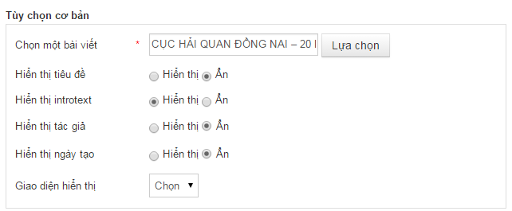
4. Danh sách câu hỏi
Module hiển thị danh sách câu hỏi
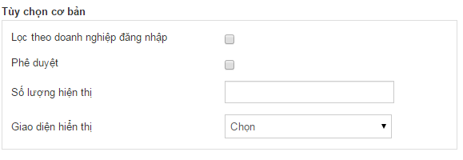
Gồm có các tùy chọn cơ bản:
-
Lọc theo doanh nghiệp đăng nhập: Khi check vào thì chỉ hiển thị những câu hỏi của doanh nghiệp đang đăng nhập hỏi.
-
Phê duyệt: Khi check vào thì chỉ hiển thị những câu hỏi đã phê duyệt
-
Số lượng hiển thị: Số lượng câu hỏi hiển thị trong một trang
5. Danh sách doanh nghiệp
Module hiển thị danh sách doanh nghiệp
6. Đăng ký
Menu để doanh nghiệp đăng ký
7.Thông tin doanh nghiệp
Menu hiển thị thông tin doanh nghiệp đang đăng nhập hiện tại
8. Đổi Thông tin doanh nghiệp
9. Doanh nghiệp hỏi
Module doanh nghiệp đặt câu hỏi
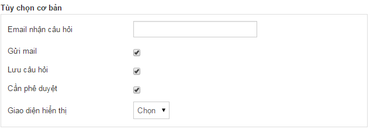
Các tùy chọn cơ bản:
-
Email nhận câu hỏi: Khi doanh nghiệp đặt câu hỏi (nếu có check gửi mail) thì thông tin câu hỏi của doanh nghiệp sẽ gửi về email này
-
Gửi mail: Khi có check thì sẽ gửi mail về email được thiết lập ở trên
-
Lưu câu hỏi: Khi có check thì sẽ lưu câu hỏi vào hệ thống
-
Cần phê duyệt: Khi có check vào thì trạng thái của câu hỏi sẽ là chưa phê duyệt (Cần chờ để phê duyệt)
10. Menu
Đây là module hiển thị menu ( main-menu, Menu dưới footer….)
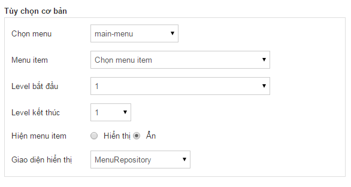
Chọn nhóm menu để hiển thị
11. Tài liệu
Module hiển thị danh sách các file tài liệu (Ví dụ Menu Thông tin đấu thầu, một số biểu mẫu hải quan)
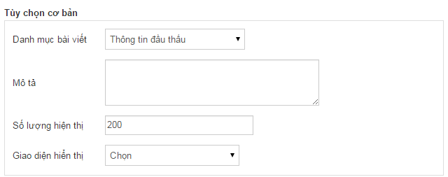
Tùy chọn cơ bản:
-
Danh mục: Chọn danh mục để hiển thị những tài liệu thuộc danh mục
-
Số lượng hiển thị: số lượng tài liệu hiển thị trong một trang
12. Đánh dấu nội dung
Hiển thị danh sách các văn bản, tin tức của doanh nghiệp đăng nhập hiện tại đã xem.
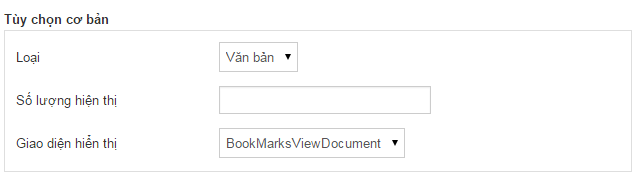
-
Loại: Hiển thị văn bản hay tin tức
-
Số lượng hiển thị: số lượng hiển thị trong một trang
13. Liên kết ngoài
Để tạo một liên kết đi ra ngoài trang, Trong khung chi tiết nhập đường link vào đường dẫn
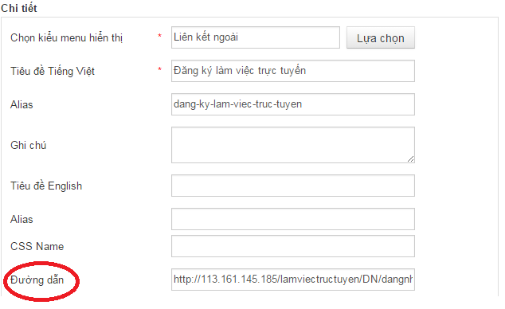
14. Slide
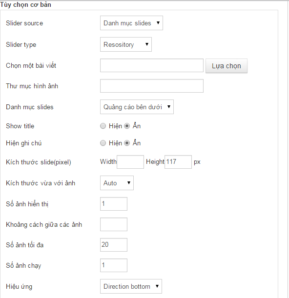
15. Ngôn ngữ
Module hiển thị ngôn ngữ (Chuyển đổi ngôn ngữ ở trong site)
Module này không có tùy chọn cơ bản
16. Html
Module hiển thị nội dung HTML
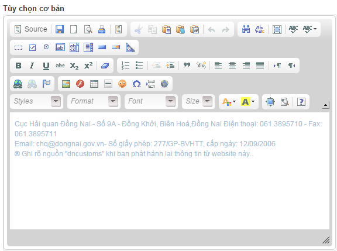
17. Đếm lượt truy cập
Module thống kê lượt truy cập của người dùng vào site
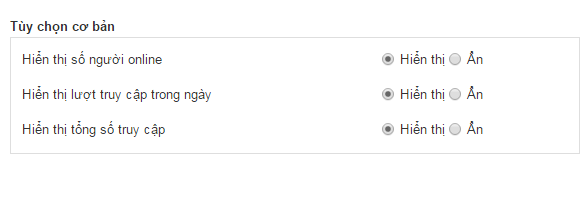
Các tùy chọn cơ bản:
-
Hiển thị số người online : Ẩn/Hiện Số người đang online
-
Hiển thị lượt truy cập trong ngày : Ẩn/Hiện số lượt truy cập trong ngày
-
Hiển thị tống số truy cập: Ẩn/Hiện tổng số lượt truy cập
18. Danh sách hình ảnh
Hiển thị danh sách hình ảnh theo một hoặc nhiều album
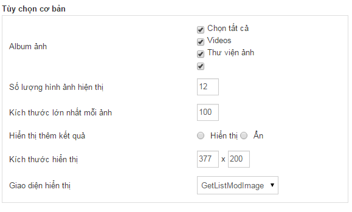
19. Tỉ giá
Module hiển thị tỉ giá của ngoại tệ
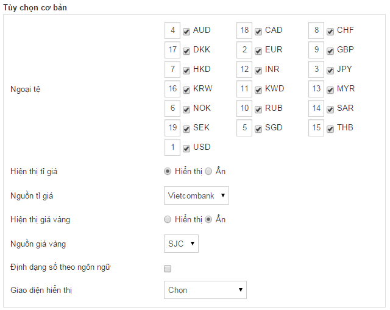
20. Khảo sát
Module để hiển thị bài khảo sát
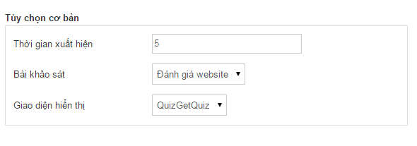
Các tùy chọn cơ bản:
-
Thời gian xuất hiện(phút): Thời gian popup khảo sát xuất hiện trên website, tính từ lúc người dùng bắt đầu vào website
-
Bài khảo sát: Chọn bài khảo sát